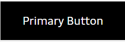
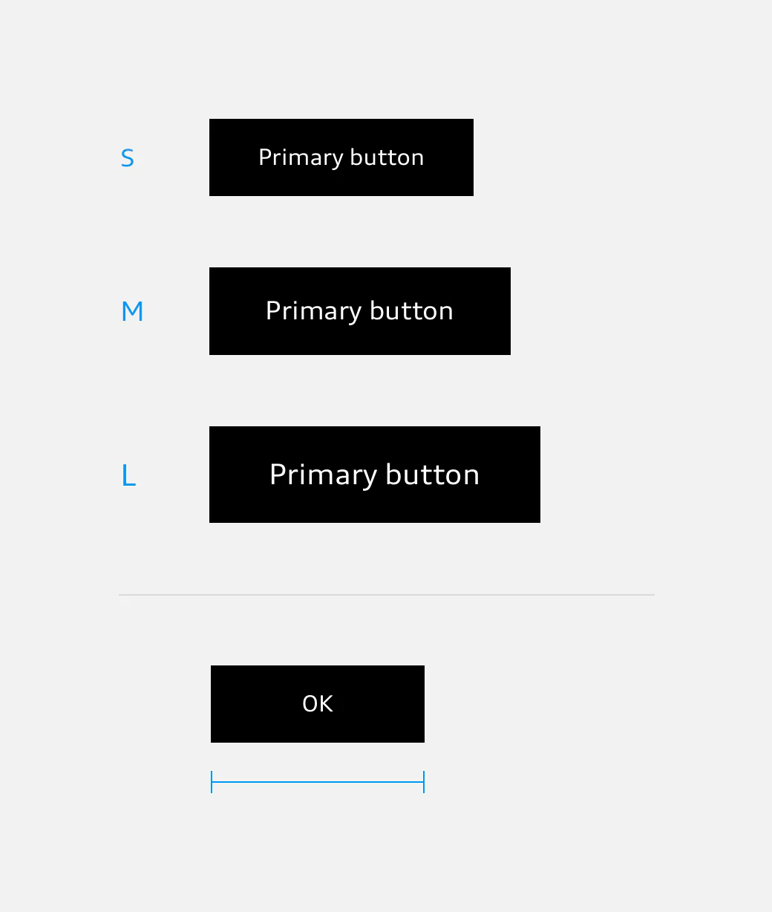
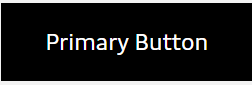

Primary Button
The filled-out primary button is used for the most important action on a page or in a view.
Buttons can be used to show the user’s choice of options for actions and assign these to a clear hierarchy. The target page to be accessed or the action to be triggered is shown on the buttons by means of a label in Audi Type Wide Normal or else by an icon, or by a combination of the two. All buttons provide visual feedback when clicked or tapped in the form of a response effect.
Buttons are either black or white. Buttons can be grouped.
The size of buttons depends on the base font size used which can be adapted to the viewport width. Small button at a base font size of 16 px, e.g. in a smartphone app. Medium sized button at a base font size of 18 px, e.g. in a tablet app. Large button at a base font size of 20 px, e.g. on a website which is rendered in a wide viewport. The minimum width of primary and secondary buttons is defined as nine times the base font size. Thus, with a base font size of 16 px, the minimum button width is 9 × 16 px = 144 px.
The filled-out primary button is used for the most important action on a page or in a view.
